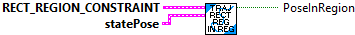

Determines if the robot pose is within the defined region.
Parameters:
- Rectangular Region Constraint -- Constraint data cluster.
- statePose - current traj state Pose
Returns
- PoseInRegion -- TRUE if pose is within the region.
Constructs a new EllipticalRegionConstraint.
Parameters:
- BottomLeftPoint -- Translation holding the bottom left point of the rectangle.
- TopRightPoint -- Translation holding the top right point of the triang.e
- constraint -- The constraint to enforce when the robot is within the region.
Returns
- Rectangular Region Constraint - Constraint data structure.

Return the maximum allowed velocity given the provided conditions.
Ensure each individual normalized wheel speed is within the defined maximum velocity.
Parameters:
- RectRegionConstraint - Constraint data structure
- statePose - current traj state Pose
- curvature - current traj curvature
- maxVelocity - current traj max velocity
Returns
- maxVelocity - Maximum allowed velocity.

Return the minimum and maximum allowed acceleration given the provided conditions.
It appears that this routine doesn't do anything. It returns default values.
Parameters:
- RectRegionConstraint - Constraint data structure
- statePose - current traj state Pose
- curvature - current traj curvature
- maxVelocity - current traj max velocity
Returns
- TrajConstraint_Min_Max - Data structure with Min / Max acceleration.